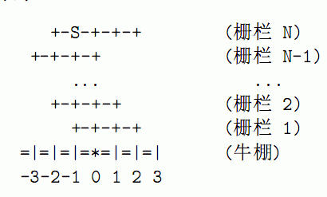

约翰建造了N(1≤N≤50000)个栅栏来与牛同乐．第i个栅栏的z坐标为[Ai.，Bi]（-100000≤Ai<Bi≤10^5），y坐标为i．牛棚的外栏即x轴，原点是牛棚的门．奶牛们开始处于(S，N)，她们需要回到牛棚的门（下图中用“*’表示）．

约翰的初衷是为了给奶牛们练习跳跃，但是奶牛们似乎更愿意四蹄着地，慢慢她沿着栅栏
走．当她们走到栅栏的尽头，就会朝着牛棚的个栏方向（即y轴负方向）行走，直到碰上另一条栅栏或是牛棚外栏．这时候她们便要选择继续向左走，还是向右走．奶牛们希望走的路程最短．由于可方向的路程一定，你只需求出z方向走的最短路程，使奶牛回到原点．